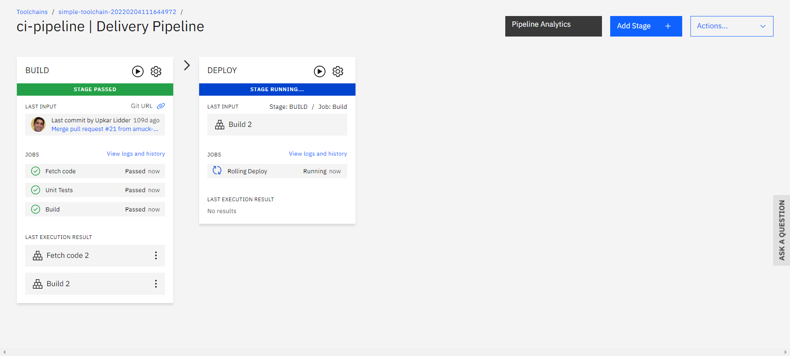

Project Overview
The Movie Database v2.0 project consists of several distinct parts, each contributing to the development and deployment of a web application. Here's a detailed description of each part:

The Movie Database v2.0 project consists of several distinct parts, each contributing to the development and deployment of a web application. Here's a detailed description of each part:
In this part, we set up two essential services on IBM Cloud. First, we create an instance of the Cloudant service, which will serve as our database. Second, we create an instance of the Natural Language Understanding (NLU) service, enabling us to analyze and understand textual content within the application.

This section focuses on creating a continuous integration and continuous deployment (CI/CD) pipeline to streamline our development process. We start by setting up a toolchain and delivery pipeline. Then, we configure the toolchain to work with our GitHub repository. After forking the project repository into our GitHub account, we create a build stage that uses the input from the forked repository. Finally, we create a deploy stage and run both stages to ensure seamless code delivery.
In this section we prepare for deployment by collecting necessary environment variables for the Cloudant service and NLU. We will use these variables in our Node.js application. The next step involves deploying our Node.js application from the Git repository to IBM Cloud Code Engine (CE) using the CLI provided in our lab environment. After deployment, we open the deployment URL to verify the functionality of our web application.


Showcase the final app here with a description of its features and functionality. Include an image of the app's interface.
.png)